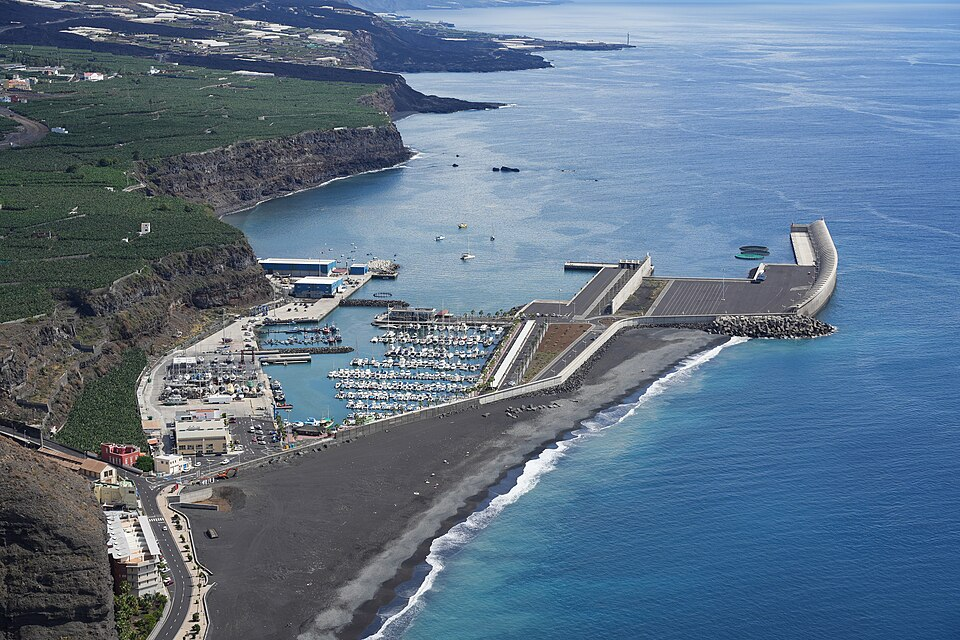
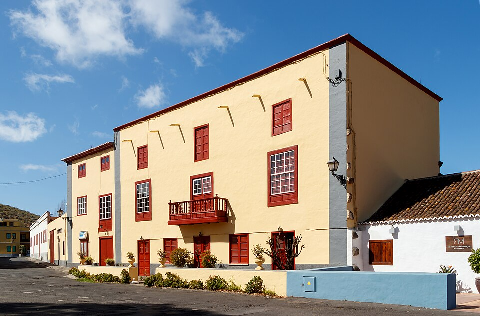
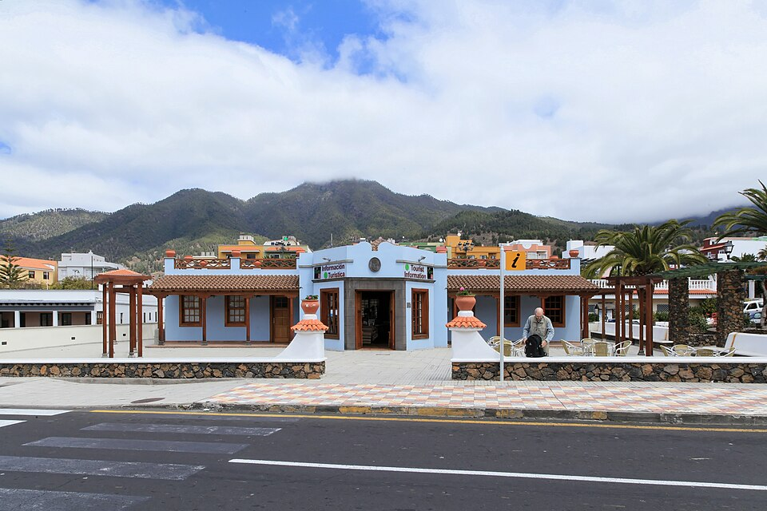
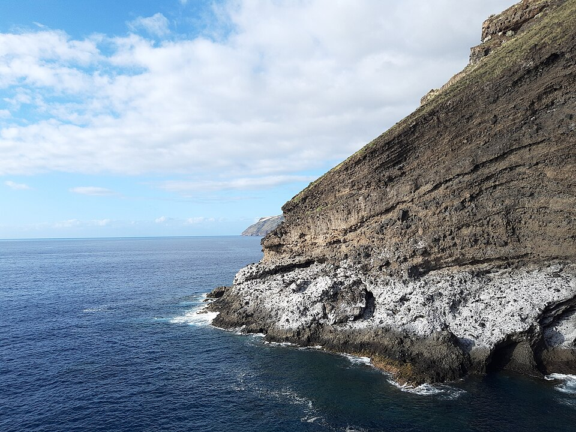
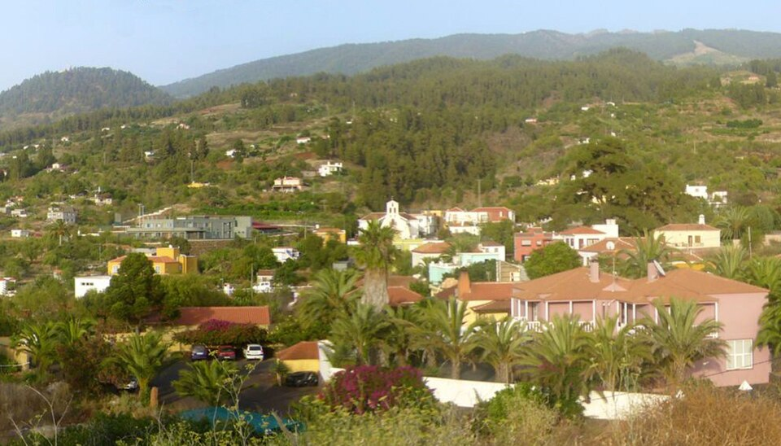
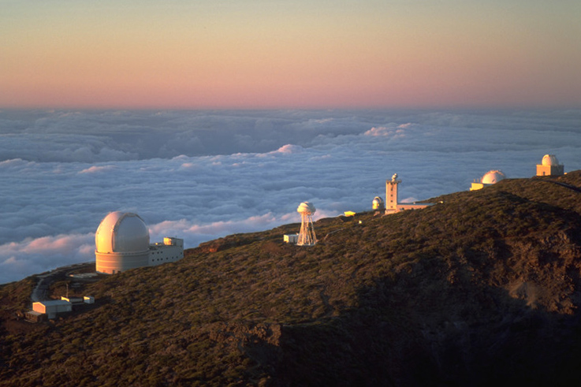

Costa y puerto de Tazacorte
Un paisaje costero en el que se encuentran el puerto, el océano Atlántico y el entorno de Tazacorte.
Galería del oeste
Seis lugares y paisajes para descubrir el oeste de La Palma: costa, pueblos, montañas y zonas rurales.

Un paisaje costero en el que se encuentran el puerto, el océano Atlántico y el entorno de Tazacorte.

Una propuesta para observar las plazas, las fachadas y los rincones del casco urbano.

El relieve volcánico y los contrastes del paisaje interior son protagonistas de este recorrido visual.

Las laderas y los miradores ofrecen distintas perspectivas del oeste de la isla.

Caminos, zonas agrícolas y paisajes de medianías para descubrir otra cara de La Palma.

La luz del final del día transforma los colores de la costa occidental.